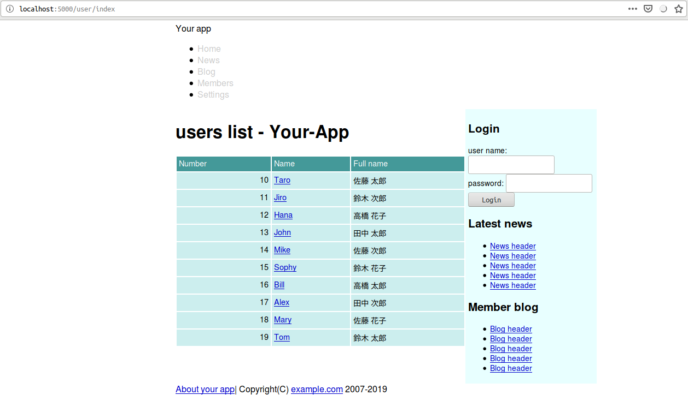

Caveman kills ruby on rails - Chapter 5
Meta info
対象読者
NOTE
筆者はcavemanを捨てsnoozeを使うようになった。 詳細はここに記してある。
Introduction
本稿は原著の各章をCommon Lispに翻訳するシリーズの第5章である。 本章ではリソースベースのルーティングを通してCavemanとdjulaの作法を復習していく。
5.1 REST and routing
CavemanにはRailsにおけるリソースに相当するものはない。 レールに乗って素早く動くことはできない。 自身が進むべき坑道を自身で掘り進むのがCavemanの流儀といったところか。
5.2 Seven actions
INDEX
templates/shared/header.htmlのリンクを編集する。
<nav class="menubar">
<ul>
<li><a href="/">Home</a></li>
<li><a href="#">News</a></li>
<li><a href="#">Blog</a></li>
<li><a href="/user/index">Members</a></li>
<li><a href="#">Settings</a></li>
</ul>
</nav>DEFROUTEは以下の通り。
(defroute index "/user/index"()
(render "user/index.html" `(:users ,(mito:select-dao 'your-app.model::user
(sxql:order-by :number)))))templates/user/index.htmlを作成し、以下のようにする。
djulaでオブジェクトのスロットへのアクセスには変数名に続き“.”でスロット名を指定すれば良い。
{% extends "layouts/app.html" %}
{% block title %}{% lisp (title! "list of users") %}{% endblock %}
{% block content %}
<h1>{% lisp (title!) %}</h1>
{% if users %}
<table class="list">
<thead>
<tr>
<th>背番号</th>
<th>ユーザー名</th>
<th>指名</th>
</tr>
</thead>
<tbody>
{% for user in users %}
<tr>
<td style="text-align: right">{{user.number}}</td>
<td>{{user.name}}</td>
<td>{{user.full-name}}</td>
</tr>
{% endfor %}
</tbody>
</table>
{% else %}
<p>会員情報がありません</p>
{% endif %}
{% endblock %}
Apply css
static/css/app.cssに以下のコードを追加する。
/* table */
table.list, table.attr {
font-size: 90%;
width: 100%;
}
table.list th, table.attr th {
background-color: #499;
color: white;
font-weight: normal;
}
table.list td, table.list th,
table.attr td, table.attr th {
padding: 4px;
}
table.list th {
text-align: left;
}
table.attr th {
text-align: right;
}
table.list td, table.attr td {
background-color: #cee;
}
Links
各種リンクの追加を行う。 templates/user/index.htmlを以下のように追加編集する。
<h1>List of users</h1>
<div class="toolbar"><a href="/user/new">新規登録</a></div>
{% if users %}static/css/app.cssに以下のコードを追加する。
/* toolbar */
ul.toolbar,
div.toolbar {
padding: 15px 0;
font-size: 90%;
text-align: right;
}templates/user/index.htmlに編集用のテーブルヘッダを追加する。
<thead>
<tr>
<th>Number</th>
<th>Name</th>
<th>Full name</th>
<th>Operation</th>
</tr>
</thead>同様にテーブルデータを追加する。
{% for user in users %}
<tr>
<td style="text-align: right">{{user.number}}</td>
<td>
<a href="/user/{{user.id}}/">{{user.name}}</a>
</td>
<td>{{user.full-name}}</td>
<td>
<a href="/user/{{user.id}}/edit">Edit</a>|
<a data-confirm="Really delete it?" rel="nofollow" data-method="delete" href="/user/{{user.id}}">Delete</a>
</td>
</tr>
{% endfor %}
Search
検索機能追加のためにsrc/web.lispに以下のコードを追加する。
(defroute "/user/search"(&key |q|)
(render "user/index.html"
`(:users ,(mito:select-dao 'your-app.model::user
(sxql:where `(:or (:like :name ,|q|)
(:like :full-name ,|q|)))
(sxql:order-by :number)))))templates/user/index.htmlにフォームを追加する。 便利ヘルパーなど存在しないので、ここでは手でゴリゴリ書く。
<form class="search" action="/user/search" accept-charset="UTF-8" method="get">
<input name="utf8" type="hidden" value="✓" />
<input type="text" name="q" id="q" />
<input type="submit" name="commit" value="search" data-disable-with="search" />
</form>
Detail
ユーザーの詳細を見れるページを追加する。 src/web.lispにルーティングを追加する。
(defroute "/user/:id"(&key id)
(setf id (parse-integer id))
(render "user/show.html"
`(:user ,(mito:find-dao 'your-app.model::user :id id))))上記ルーティングのためのテンプレートを/templates/user/show.htmlとして作る。
{% extends "layouts/app.html" %}
{% block title %}{% lisp (title! "User detail") %}{% endblock %}
{% block content %}
<h1>{% lisp (title!) %}</h1>
<div class="toolbar"><a href="/user/{{id}}/edit">Edit</a></div>
<table class="attr">
<tr>
<th width="150">Number</th>
<td>{{user.number}}</td>
</tr>
<tr>
<th>Name</th>
<td>{{user.name}}</td>
</tr>
<tr>
<th>Full name</th>
<td>{{user.full-name}}</td>
</tr>
<tr>
<th>Sex</th>
<td>
{% ifequal user.sex 1 %}
Male
{% else %}
Female
{% endifequal %}
</td>
</tr>
<tr>
<th>Birthday</th>
<td>
{{ user.birthday|
lisp: local-time:timestamp-to-universal|
date: ((:year 4)"年"(:month 2)"月"(:day 2)"日") }}
</td>
</tr>
<tr>
<th>Mail adress</th>
<td>{{user.email}}</td>
</tr>
<tr>
<th>administrator</th>
<td>
{% if user.administrator %}
◯
{% else %}
ー
{% endif %}
</td>
</tr>
</table>
{% endblock %}
Summary
- RESTとは、リソースという概念を中心にしてウェブアプリケーションを組み立てる考え方です。
- リソースの一覧ページはindexアクション、詳細情報のページはshowアクションで実装します。